Intelligent Fueling · Pilonul 3
CARTEA DE
REȚETE
Claudia · 7 zile · 1460 kcal · Modulară
SISTEMUL
MIX & MATCH
Această carte a fost proiectată cu o matematică modulară. Toate mesele de același fel (Mic dejun, Prânz etc.) au exact aceiași macronutrienți. Astfel, poți combina orice masă din orice zi și vei ajunge MEREU la același total perfect calculat: 1460 kcal și 120g Proteine.
Calorii / zi1460
Proteină120g
Carbohidrați110g
Grăsimi55g
CUM FUNCȚIONEAZĂ MATEMATICA
1Toate Micul Dejunurile = 380 kcal. Orice alegi dimineața din această carte, vei avea 30g proteine asigurate.
2Toate Gustările = 200 kcal. Combustibil rapid (15g P) pe parcursul zilei.
3Toate Prânzurile și Cinele = 440 kcal. Mese principale masive, fiecare aducând 35-40g proteine.
4Mixezi cum vrei. Vrei micul dejun din Ziua 1 cu cina din Ziua 7? Perfect. Matematica a fost deja făcută pentru tine. Vei avea la final fix 1460 kcal.
DE REȚINUT
Ai libertate 100%. Aceasta nu mai este o dietă liniară, ci un bufet de rețete optimizate pe tine. Gătește-le pe cele care îți plac cel mai mult și transformă-le în stil de viață.

BUILT · Intelligent Fueling
MĂMĂLIGĂ CU BRÂNZĂ SLABĂ ȘI OU
Z1 · MIC DEJUN
MĂMĂLIGĂ CU BRÂNZĂ
SLABĂ ȘI OU
Intelligent FuelingDimineața⏱ 10 min
Calorii380
Proteine30G
Carbohidrați30G
Grăsimi15G
Ingrediente
Mămăligă caldă140 g
Brânză perle light120 g
Ouă ochiuri1 ou + 1 albuș
Slănină (foarte subțire)5 g
Execuție
01Fă ouăle în tigaie antiaderentă, fără ulei.
02Amestecă mămăliga caldă cu brânza perle.
03Taie slănina foarte subțire, doar de gust, și servește totul cald.
PONTCombinația de mămăligă și brânză slabă aduce volum mare la calorii puține.
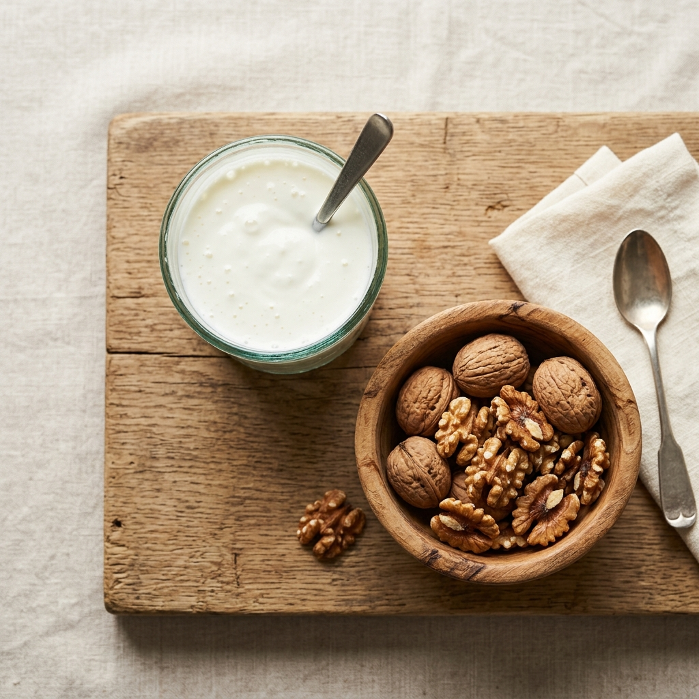
BUILT · Intelligent Fueling
KEFIR CU MIGDALE
Z1 · GUSTARE
KEFIR
CU MIGDALE
Intelligent FuelingGustare⏱ 1 min
Calorii200
Proteine15G
Carbohidrați20G
Grăsimi10G
Ingrediente
Kefir 1.5%250 ml
Migdale crude15 g
Execuție
01Bea kefirul ca atare sau amestecă-l cu migdalele mărunțite.
PONTMigdalele îți asigură necesarul de grăsimi sănătoase, iar kefirul e perfect pentru digestie.
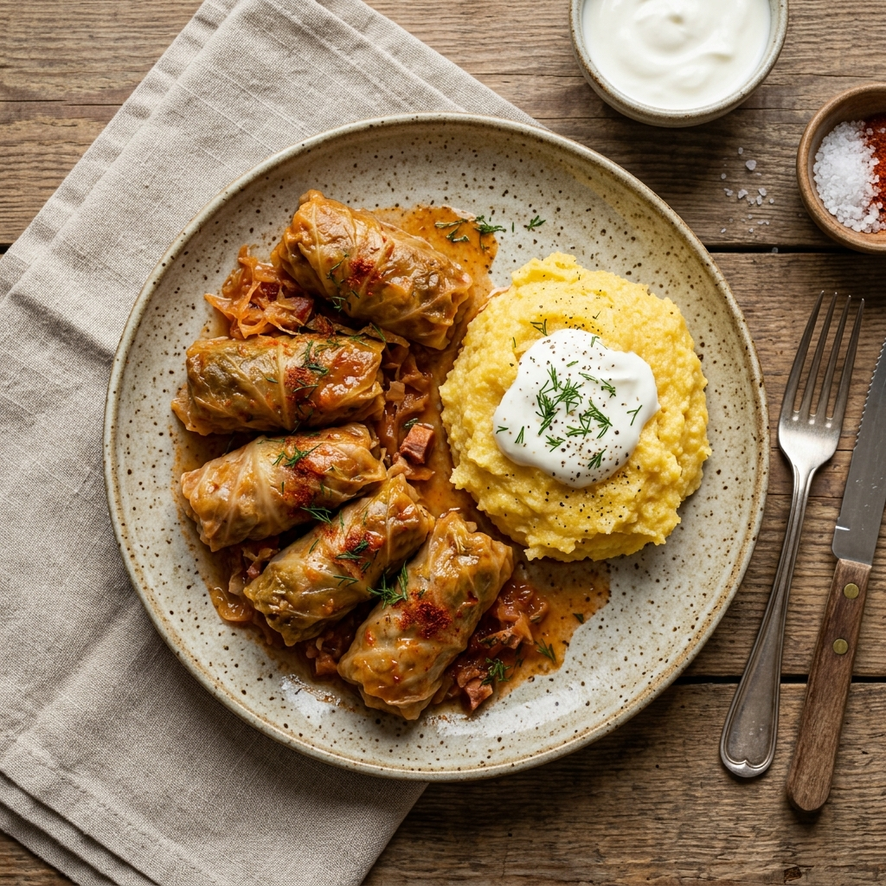
BUILT · Intelligent Fueling
FRIGĂRUI DE PUI CU OREZ
Z1 · PRÂNZ
FRIGĂRUI DE
PUI CU OREZ
Intelligent FuelingPrânz⏱ 20 min
Calorii440
Proteine40G
Carbohidrați35G
Grăsimi15G
Ingrediente
Piept de pui160 g
Orez sălbatic (crud)45 g
Ardei și ceapă100 g
Ulei măsline5 g
Execuție
01Fierbe orezul conform instrucțiunilor.
02Taie puiul și legumele cubulețe, pune-le pe băț și fă-le la grătar/tigaie.
03Servește frigăruile alături de orez.
PONTPuiul la grătar cu orez este baza oricărui sistem curat de nutriție. Ardeiul adaugă volum.
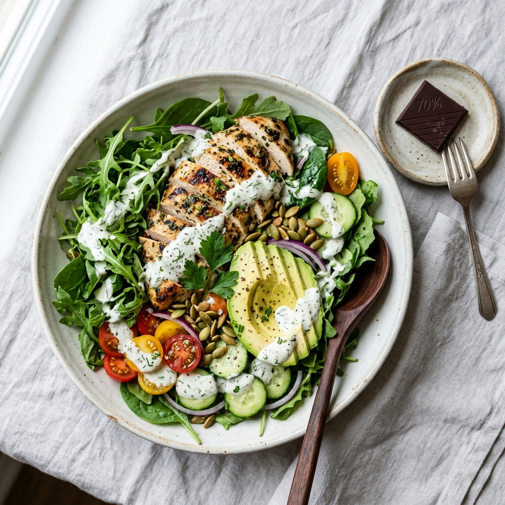
BUILT · Intelligent Fueling
PĂSTRĂV LA CUPTOR
Z1 · CINĂ
PĂSTRĂV
LA CUPTOR
Intelligent FuelingSeara⏱ 25 min
Calorii440
Proteine35G
Carbohidrați25G
Grăsimi15G
Ingrediente
File de păstrăv150 g
Cartofi natur130 g
Ulei măsline5 g
Ciocolată 85% (după masă)10 g
Execuție
01Bate peștele cu puțin ulei, sare, lămâie și pune-l la cuptor.
02Fierbe cartofii și presară pătrunjel.
03Servește peștele cu cartofii, iar la final bucură-te de ciocolată.
PONTPeștele seara se digeră ușor. Pătratul de ciocolată îți taie pofta de dulce.

BUILT · Intelligent Fueling
OMLETĂ CU TELEMEA LIGHT
Z2 · MIC DEJUN
OMLETĂ CU
TELEMEA LIGHT
Intelligent FuelingDimineața⏱ 10 min
Calorii380
Proteine30G
Carbohidrați30G
Grăsimi15G
Ingrediente
Ouă1 întreg + 3 albușuri
Telemea light (Covalact)50 g
Pâine integrală1 felie (35g)
Legume asortatela liber
Execuție
01Bate ouăle cu telemeaua fărâmițată.
02Gătește omleta într-o tigaie cu pulverizator de ulei.
03Servește cu o felie de pâine și multe legume (roșii, castraveți).
PONTAlbușurile extra cresc volumul proteic fără să adauge calorii sau grăsimi în plus.
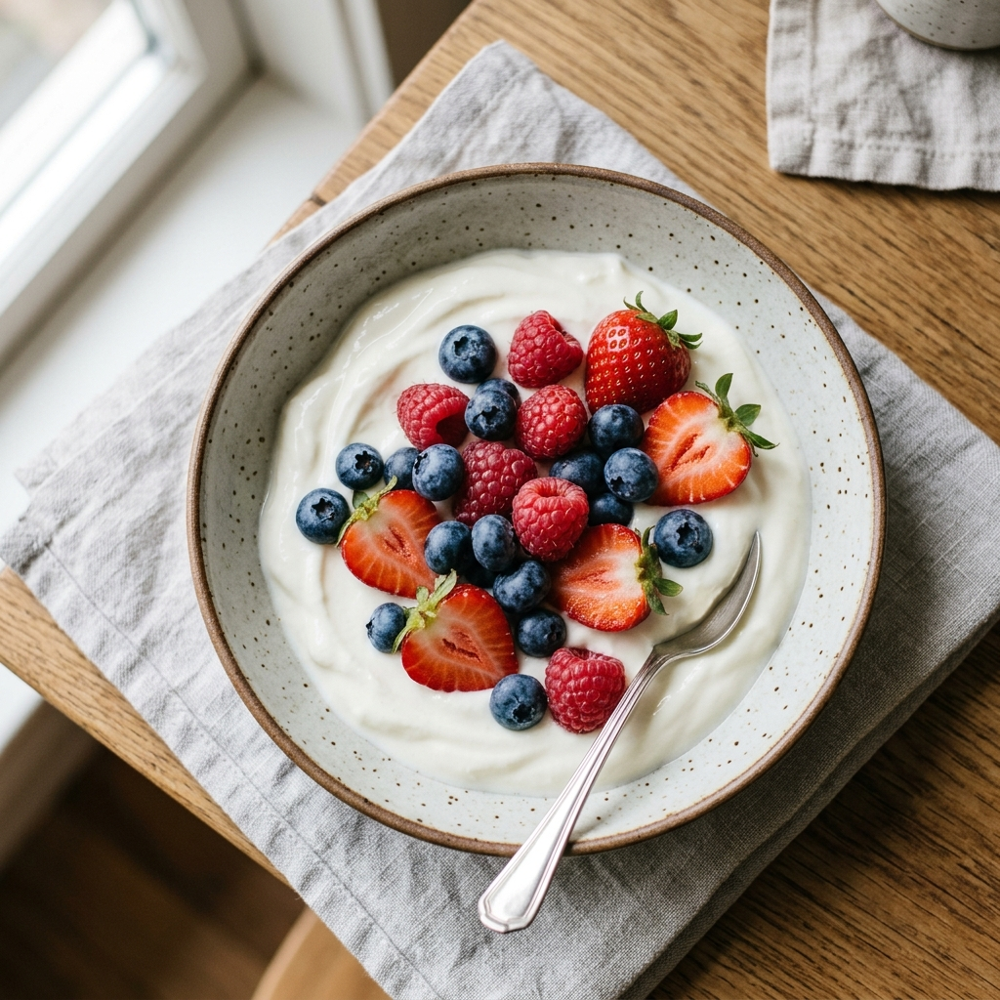
BUILT · Intelligent Fueling
IAURT GRECESC CU AFINE
Z2 · GUSTARE
IAURT GRECESC
CU AFINE
Intelligent FuelingGustare⏱ 2 min
Calorii200
Proteine15G
Carbohidrați20G
Grăsimi10G
Ingrediente
Iaurt grecesc 2%150 g
Afine100 g
Nuci / caju10 g
Execuție
01Amestecă iaurtul cu fructele și nucile tocate.
PONTAfinele au extrem de puține calorii și aduc volum și antioxidanți.
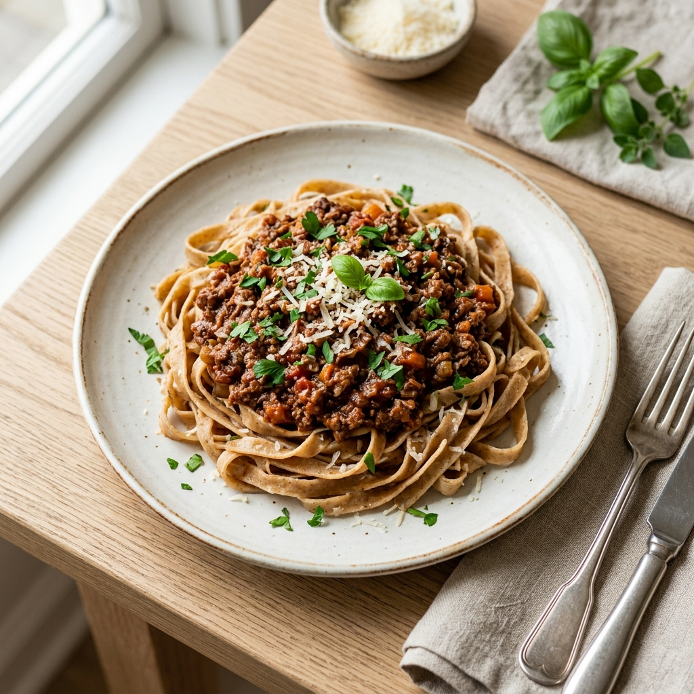
BUILT · Intelligent Fueling
VITĂ CU FASOLE VERDE
Z2 · PRÂNZ
VITĂ CU
FASOLE VERDE
Intelligent FuelingPrânz⏱ 15 min
Calorii440
Proteine40G
Carbohidrați35G
Grăsimi15G
Ingrediente
Carne tocată vită slabă160 g
Cartof dulce120 g
Fasole verde150 g
Ulei măsline5 g
Execuție
01Coace cartoful dulce sau fierbe-l.
02Trage vita la tigaie cu fasolea verde și condimente.
03Servește carnea peste cartof.
PONTCarnea de vită îți dă sațietate masivă, iar fasolea verde adaugă volum la calorii minime.
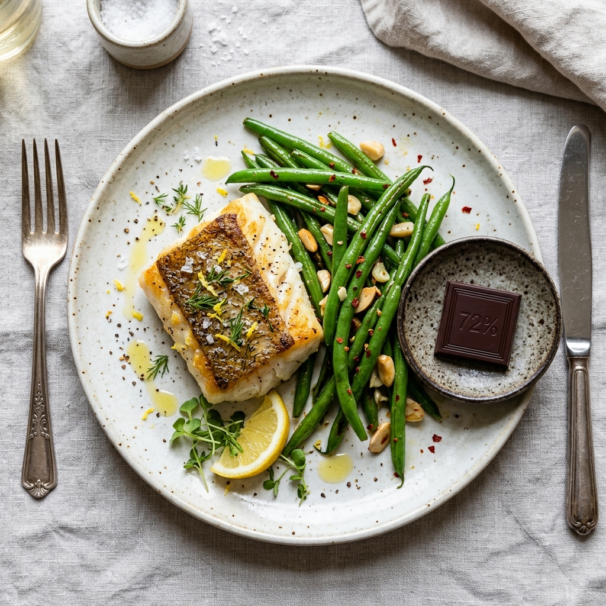
BUILT · Intelligent Fueling
SALATĂ CU TON ȘI PORUMB
Z2 · CINĂ
SALATĂ CU
TON ȘI PORUMB
Intelligent FuelingSeara⏱ 10 min
Calorii440
Proteine35G
Carbohidrați25G
Grăsimi15G
Ingrediente
Ton în suc propriu1 conservă (130g)
Ou fiert1 buc
Porumb dulce80 g
Măsline15 g
Ciocolată 85%10 g
Execuție
01Scurge tonul, fierbe oul.
02Amestecă totul pe un pat masiv de frunze (spanac/salată verde).
03Savurează ciocolata la desert.
PONTNu pune ulei în salată, grăsimea vine deja din gălbenuș și măsline.

BUILT · Intelligent Fueling
CLĂTITE DIN OVĂZ
Z3 · MIC DEJUN
CLĂTITE
DIN OVĂZ
Intelligent FuelingDimineața⏱ 15 min
Calorii380
Proteine30G
Carbohidrați30G
Grăsimi15G
Ingrediente
Ovăz mărunțit40 g
Albușuri de ou150 g
Gem zero/fără zahăr30 g
Unt de arahide15 g
Execuție
01Amestecă ovăzul cu albușurile și puțin îndulcitor.
02Formează 2-3 clătite în tigaie.
03Unge-le cu gem și unt de arahide.
PONTAlbușurile leagă clătita și o fac o adevărată bombă de proteine (fără grăsimi).
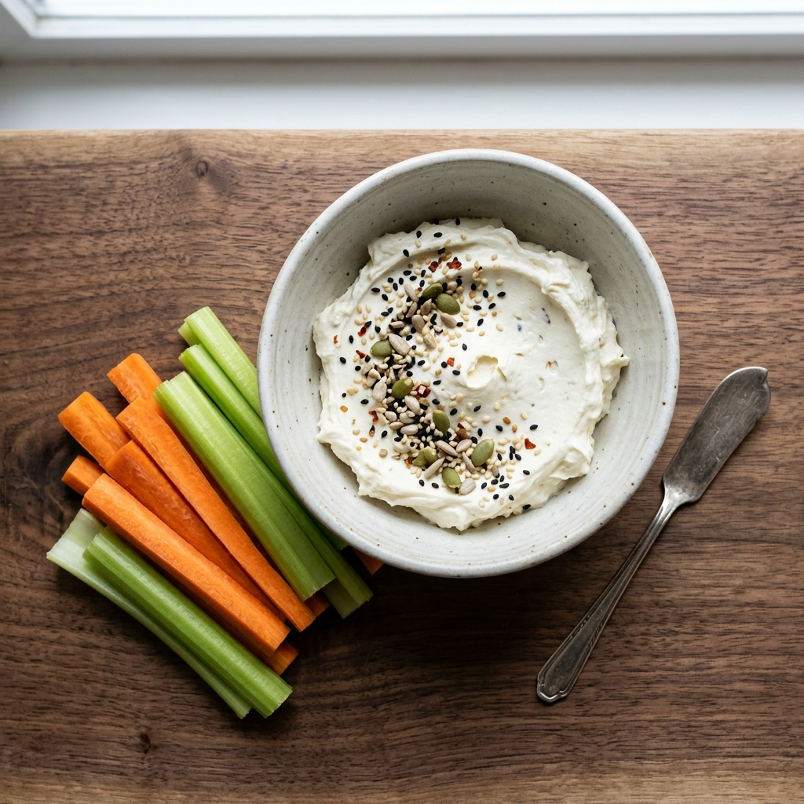
BUILT · Intelligent Fueling
OREZ EXPANDAT CU BANANĂ
Z3 · GUSTARE
OREZ EXPANDAT
CU BANANĂ
Intelligent FuelingGustare⏱ 2 min
Calorii200
Proteine15G
Carbohidrați20G
Grăsimi10G
Ingrediente
Rondele de orez2 buc
Banană1/2 buc (60g)
Protein pudră15 g (cremă)
Execuție
01Fă o cremă densă din pudră și puțină apă.
02Unge rondelele și pune felii de banană deasupra.
PONTAcoperă complet nevoia de crocant și dulce.
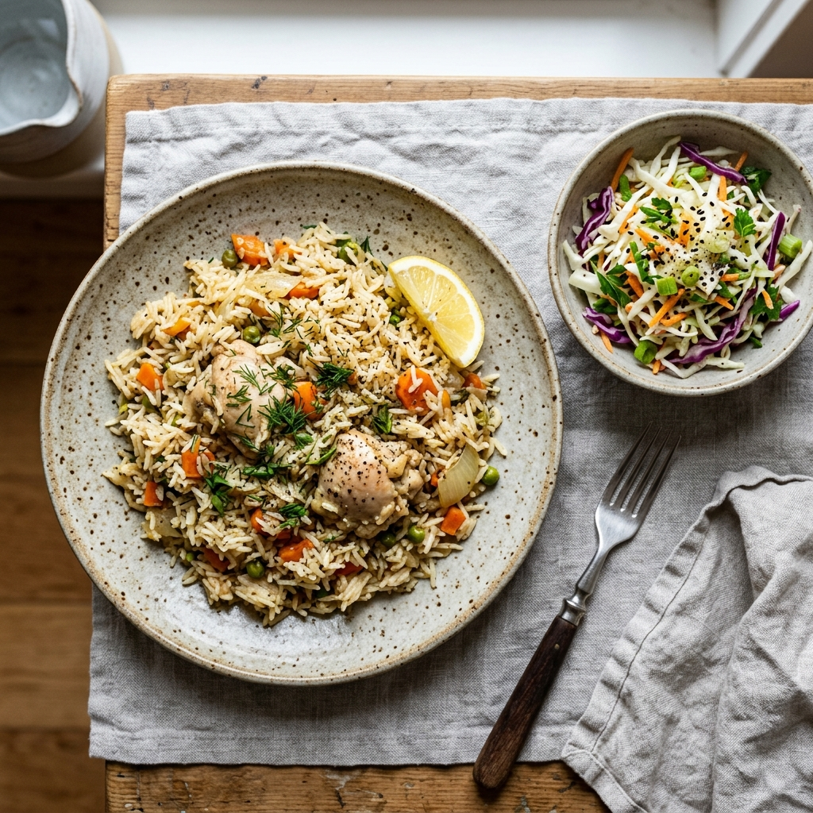
BUILT · Intelligent Fueling
CURCAN CU QUINOA
Z3 · PRÂNZ
CURCAN
CU QUINOA
Intelligent FuelingPrânz⏱ 25 min
Calorii440
Proteine40G
Carbohidrați35G
Grăsimi15G
Ingrediente
Piept de curcan160 g
Quinoa crudă45 g
Broccoli150 g
Ulei măsline1 linguriță
Execuție
01Fierbe quinoa și broccoli-ul separat.
02Gătește curcanul la cuptor sau la grill, tăiat felii.
03Combină totul cu puțin ulei de măsline și condimente.
PONTQuinoa e o sursă excelentă de carbohidrați complecși care te țin plină ore întregi.
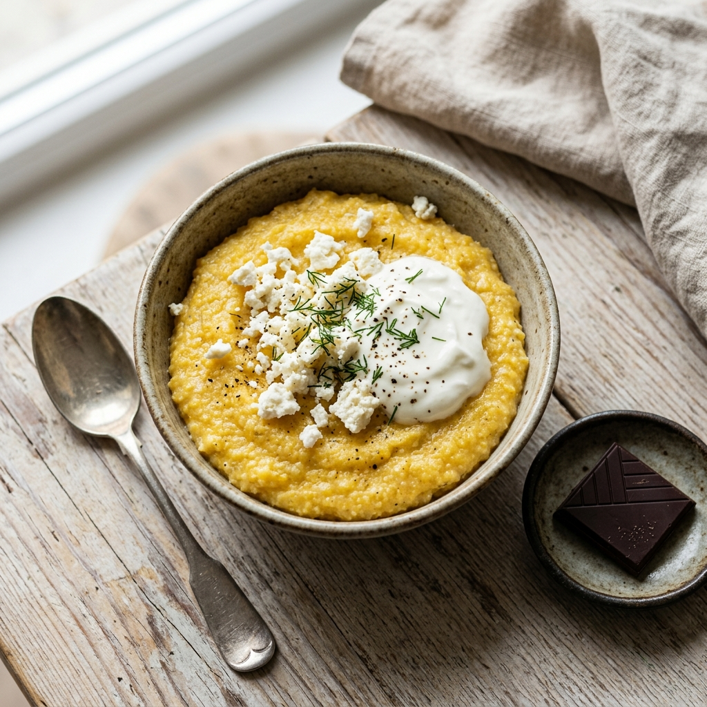
BUILT · Intelligent Fueling
BURGER FĂCUT ÎN CASĂ
Z3 · CINĂ
BURGER FĂCUT
ÎN CASĂ
Intelligent FuelingSeara⏱ 15 min
Calorii440
Proteine35G
Carbohidrați25G
Grăsimi15G
Ingrediente
Carne vită slabă (<5%)140 g
Chiflă integrală1 buc (60g)
Salată, roșie, castravete100 g
Ciocolată 85%10 g
Execuție
01Formează chifteaua și fă-o la grill.
02Montează burgerul folosind chifla, carnea și multe legume.
03Desertul clasic te așteaptă: pătratul de ciocolată.
PONTCine a zis că nu poți mânca burger seara și să slăbești? Carnea slabă face diferența.

BUILT · Intelligent Fueling
AVOCADO TOAST & SOMON
Z4 · MIC DEJUN
AVOCADO TOAST
& SOMON
Intelligent FuelingDimineața⏱ 10 min
Calorii380
Proteine30G
Carbohidrați30G
Grăsimi15G
Ingrediente
Pâine integrală1 felie mare (40g)
Somon afumat80 g
Avocado30 g
Ou poșat/fiert1 buc
Execuție
01Zdrobeaște avocadoul pe pâinea prăjită.
02Așează feliile de somon.
03Pune oul deasupra și sparge-l. Sare, piper, lămâie.
PONTMicul dejun suprem plin de Omega-3 și energie susținută.
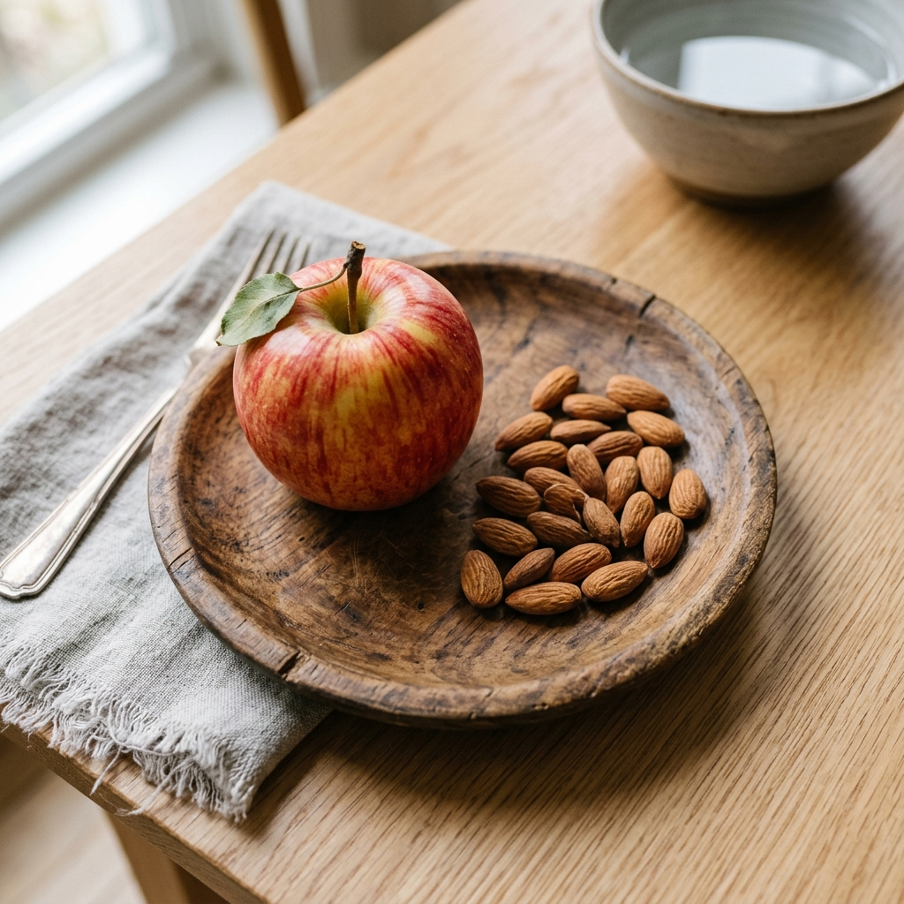
BUILT · Intelligent Fueling
COTTAGE CHEESE & MORCOVI
Z4 · GUSTARE
COTTAGE CHEESE
& MORCOVI
Intelligent FuelingGustare⏱ 3 min
Calorii200
Proteine15G
Carbohidrați20G
Grăsimi10G
Ingrediente
Perle de brânză (light)120 g
Bețe de morcov150 g
Caju8 g
Execuție
01Taie morcovii sub formă de bețișoare lungi.
02Folosește brânza pe post de sos (dip) pentru morcovi.
PONTRonțăiala perfectă. Morcovul aduce mult volum și te ține ocupată.
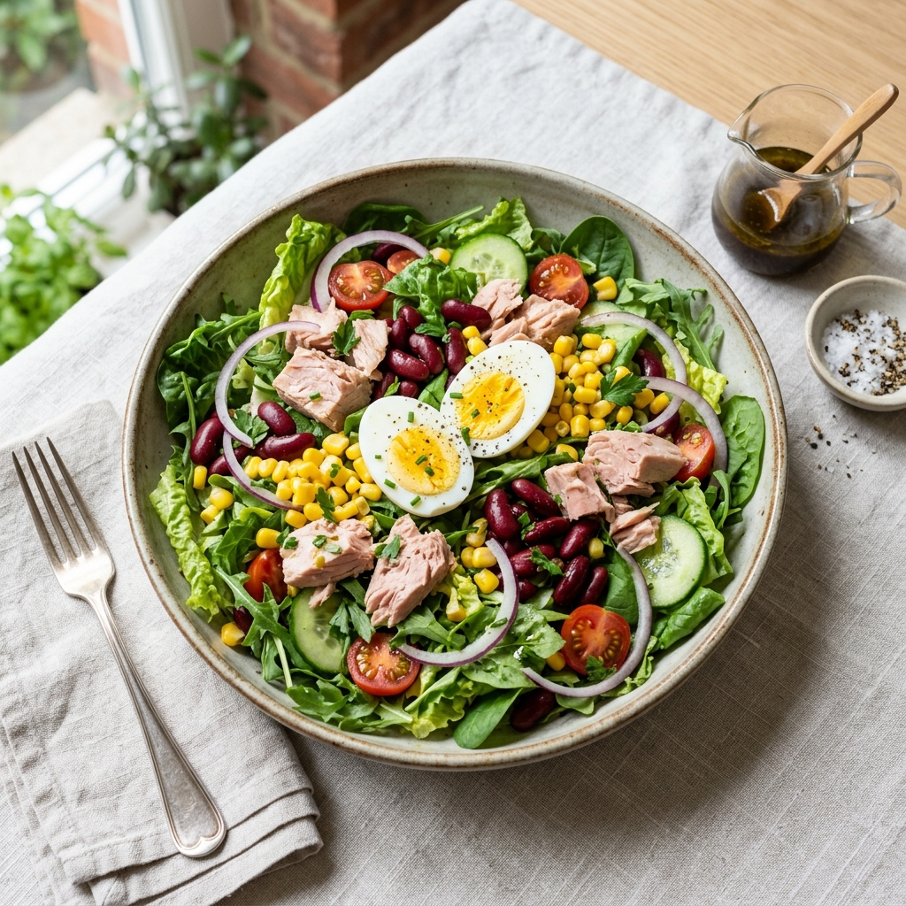
BUILT · Intelligent Fueling
PASTE CU PUI
Z4 · PRÂNZ
PASTE
CU PUI
Intelligent FuelingPrânz⏱ 20 min
Calorii440
Proteine40G
Carbohidrați35G
Grăsimi15G
Ingrediente
Piept de pui150 g
Paste integrale (crude)50 g
Ciuperci, suc roșii100 g
Ulei măsline5 g
Execuție
01Fierbe pastele al dente.
02Trage puiul tăiat cuburi cu ciupercile și sosul de roșii.
03Amestecă pastele în sos.
PONTPastele integrale nu îngrașă dacă respecți cantitatea (50g) și le pui multă proteină lângă.
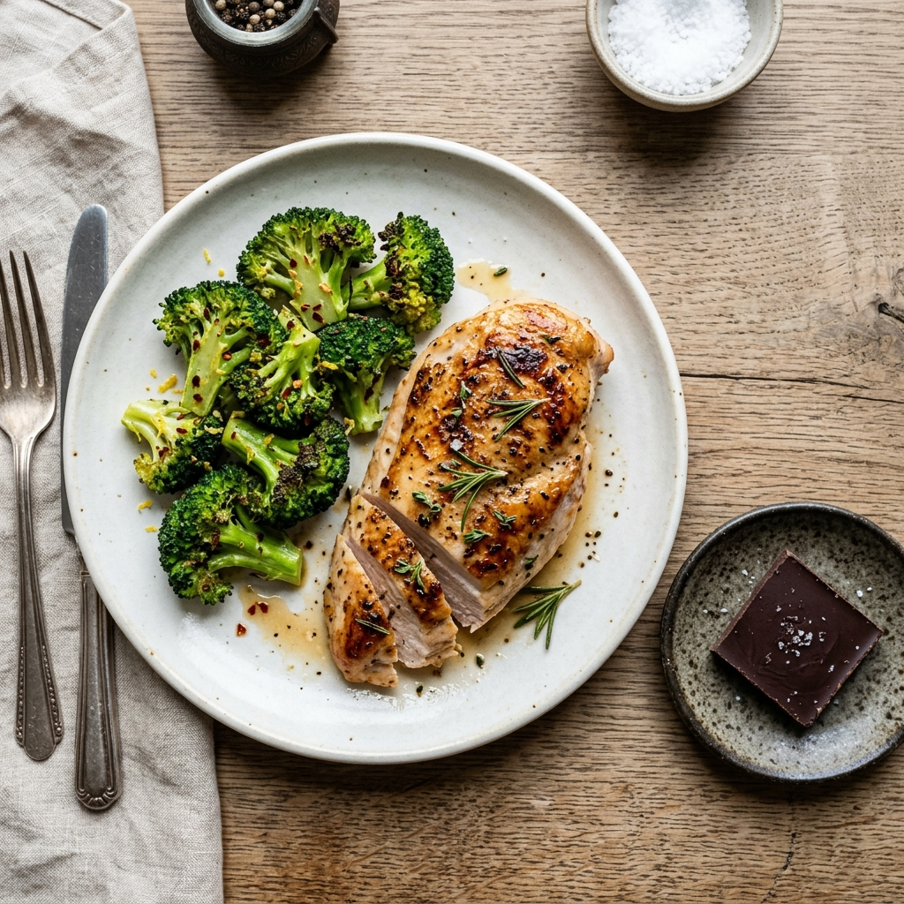
BUILT · Intelligent Fueling
SALATĂ GRECEASCĂ CU PUI
Z4 · CINĂ
SALATĂ GRECEASCĂ
CU PUI
Intelligent FuelingSeara⏱ 10 min
Calorii440
Proteine35G
Carbohidrați25G
Grăsimi15G
Ingrediente
Piept pui grill110 g
Feta light50 g
Roșii, castraveți, măsline200 g
Ciocolată 85%10 g
Execuție
01Taie legumele și amestecă-le cu brânza și măslinele (maxim 4-5 măsline).
02Pune puiul tăiat fâșii deasupra.
03Nu uita ciocolata la final.
PONTFeta light are aceleași proteine dar jumătate din grăsimi față de cea clasică.

BUILT · Intelligent Fueling
PORRIDGE PROTEIC
Z5 · MIC DEJUN
PORRIDGE PROTEIC
Intelligent FuelingDimineața⏱ 10 min
Calorii380
Proteine30G
Carbohidrați30G
Grăsimi15G
Ingrediente
Ovăz45 g
Pudră proteică25 g
Zmeură100 g
Migdale10 g
Execuție
01Fierbe ovăzul în apă până se umflă.
02Oprește focul, pune pudra și amestecă bine.
03Adaugă zmeura și migdalele zdrobite deasupra.
PONTDacă pui pudra în timp ce fierbe, se va face cocoloașe. Pune-o la final!
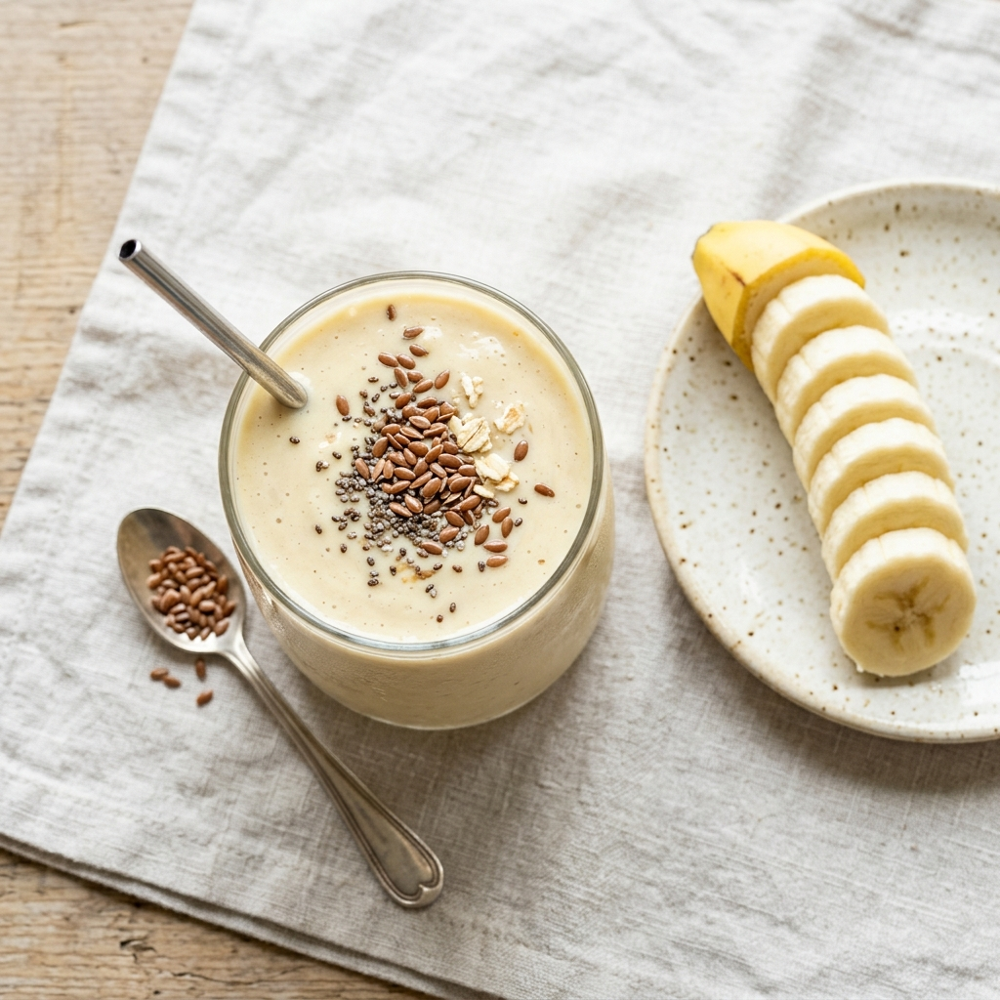
BUILT · Intelligent Fueling
MĂR ȘI UNT ARAHIDE
Z5 · GUSTARE
MĂR ȘI
UNT ARAHIDE
Intelligent FuelingGustare⏱ 2 min
Calorii200
Proteine15G
Carbohidrați20G
Grăsimi10G
Ingrediente
Măr (mediu)1 buc
Unt de arahide15 g
Iaurt grecesc 2%50 g
Execuție
01Amestecă untul de arahide cu iaurtul pentru a-i da volum.
02Înmoaie feliile de măr în amestec.
PONTAmestecând untul cu iaurtul, primești dublu volum la același număr de grăsimi.
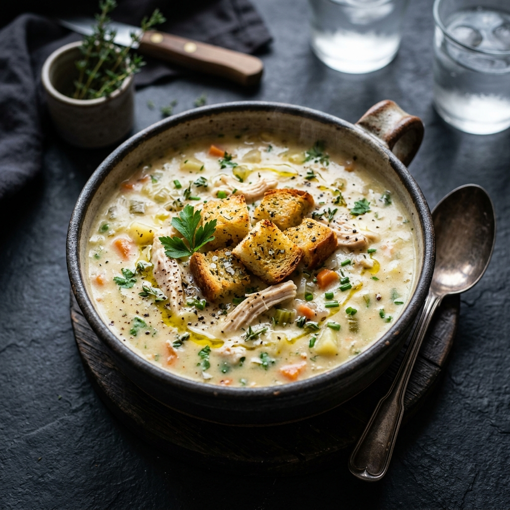
BUILT · Intelligent Fueling
COTLET DE PORC CU OREZ
Z5 · PRÂNZ
COTLET DE
PORC CU OREZ
Intelligent FuelingPrânz⏱ 20 min
Calorii440
Proteine40G
Carbohidrați35G
Grăsimi15G
Ingrediente
Cotlet porc slab160 g
Orez basmati (crud)45 g
Salată de varză150 g
Ulei (pt salată)5 g
Execuție
01Fă cotletul pe grătar cu sare și piper.
03Combină cu salata de varză albă frecată cu ulei și oțet.
PONTCotletul de porc slab (fără margine de grăsime) are la fel de puține calorii ca puiul.
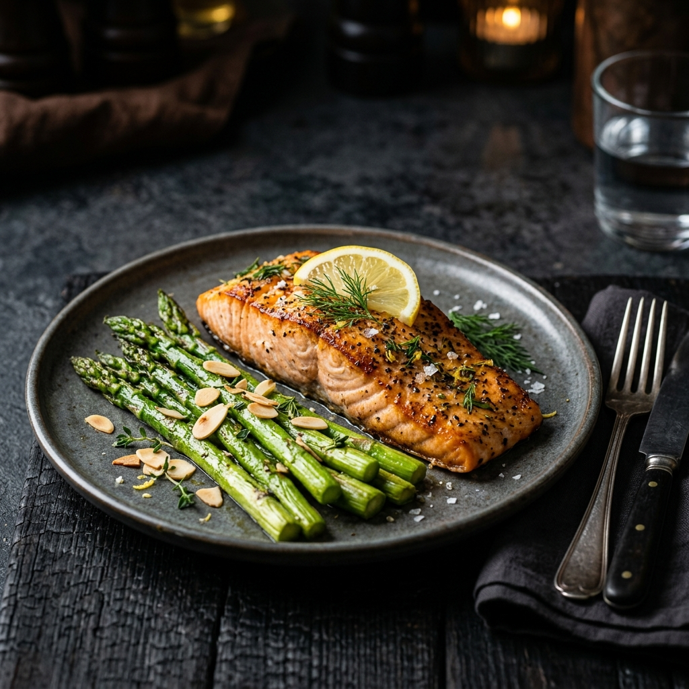
BUILT · Intelligent Fueling
QUESADILLA DE PUI
Z5 · CINĂ
QUESADILLA
DE PUI
Intelligent FuelingSeara⏱ 15 min
Calorii440
Proteine35G
Carbohidrați25G
Grăsimi15G
Ingrediente
Lipie integrală1 buc (45g)
Piept pui110 g
Mozzarella light40 g
Ciocolată 85%10 g
Execuție
01Puiul tăiat mărunt făcut la tigaie cu condiment mexican.
02Pune puiul și mozzarella pe jumătate de lipie, îndoaie și prăjește în tigaie.
PONTUn festin mexican perfect valabil în procesul tău de slăbire.

BUILT · Intelligent Fueling
SCRAMBLED OATS
Z6 · MIC DEJUN
SCRAMBLED OATS
Intelligent FuelingDimineața⏱ 12 min
Calorii380
Proteine30G
Carbohidrați30G
Grăsimi15G
Ingrediente
Ovăz40 g
Ou întreg1 buc
Albușuri100 g
Banană1/2 buc (60g)
Execuție
01Zdrobește banana și amestec-o cu oul, albușurile și ovăzul.
02Pune în tigaie ca o omletă și amestecă continuu (ca la scrambled eggs).
03Rezultă niște firimituri dulci extrem de sățioase.
PONTArată ciudat la început, dar devine rapid micul dejun favorit.
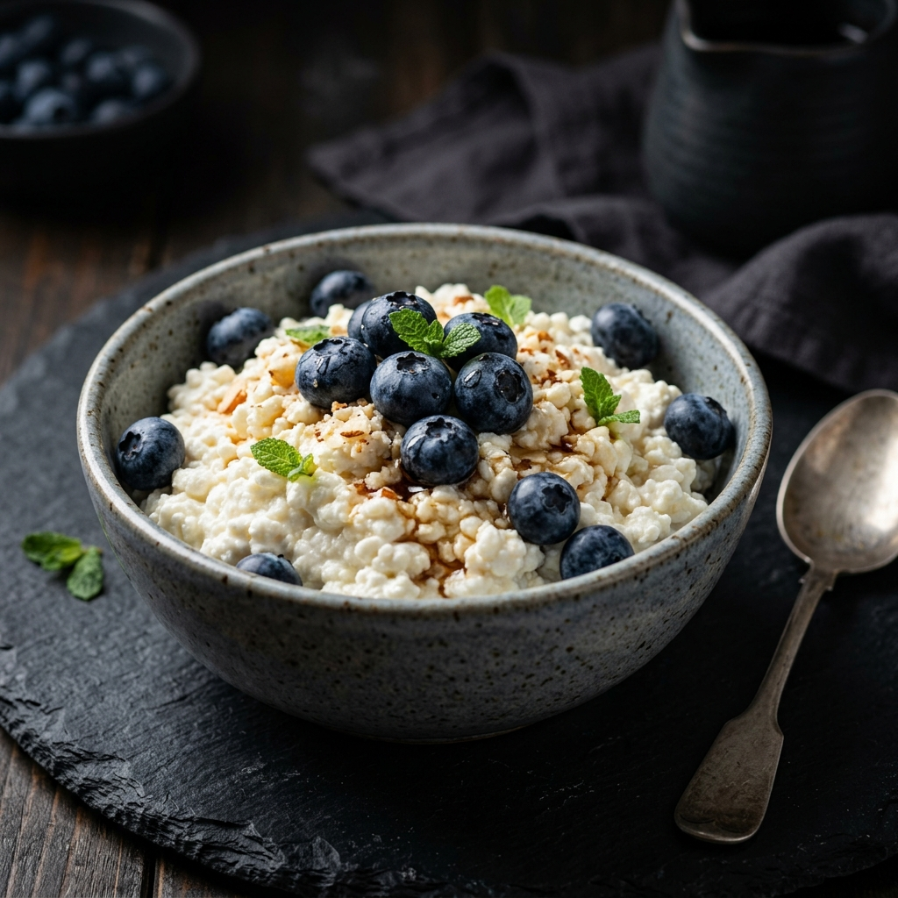
BUILT · Intelligent Fueling
BUDINCĂ PROTEICĂ
Z6 · GUSTARE
BUDINCĂ PROTEICĂ
Intelligent FuelingGustare⏱ 0 min
Calorii200
Proteine15G
Carbohidrați20G
Grăsimi10G
Ingrediente
Budincă Zuzu / Ehrmann1 cutie (200g)
Căpșuni50 g
Execuție
01Pur și simplu savurează direct din frigider.
PONTOpțiunea supremă pentru când ești pe fugă și vrei ceva dulce.
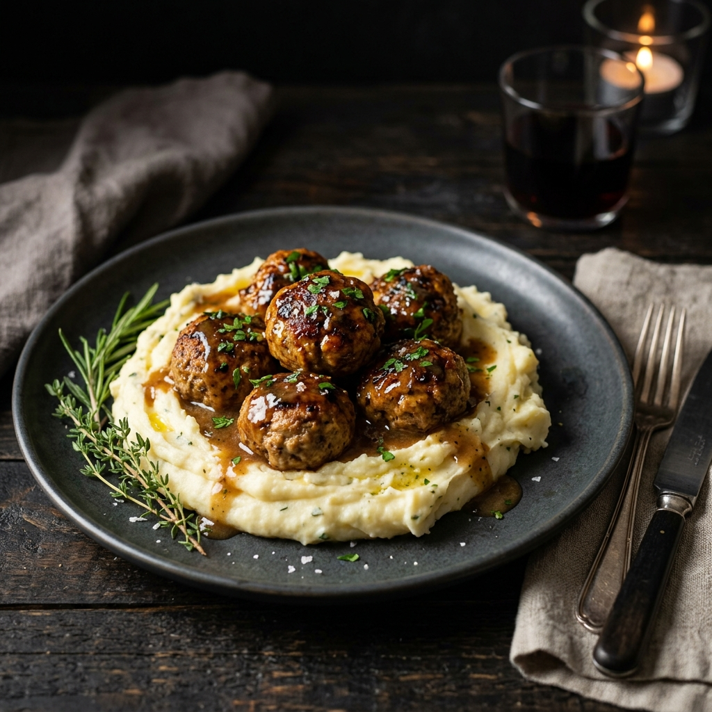
BUILT · Intelligent Fueling
CARTOFI LA CUPTOR CU PUI
Z6 · PRÂNZ
CARTOFI LA
CUPTOR CU PUI
Intelligent FuelingPrânz⏱ 35 min
Calorii440
Proteine40G
Carbohidrați35G
Grăsimi15G
Ingrediente
Pulpe pui dezosate (fără piele)170 g
Cartofi200 g
Salată asortată150 g
Ulei (pt cartofi)1 linguriță
Execuție
01Taie cartofii cuburi, dă-i cu puțin ulei, boia și la cuptor.
02Fă pulpele (curățate de piele/grăsime) pe grill.
03Servește cu o salată mare.
PONTDacă scoți pielea, pulpa de pui este la fel de excelentă ca pieptul.
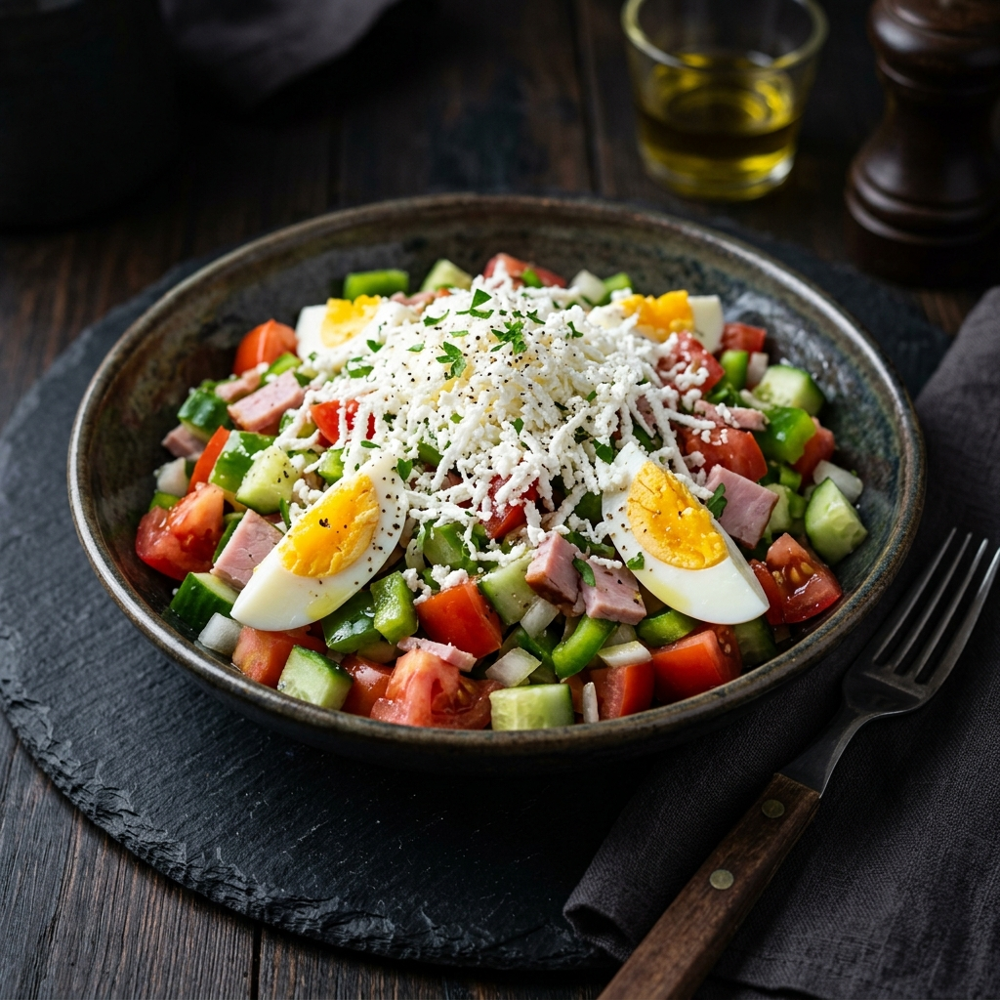
BUILT · Intelligent Fueling
SUPĂ CREMĂ DE LINTE
Z6 · CINĂ
SUPĂ CREMĂ
DE LINTE
Intelligent FuelingSeara⏱ 20 min
Calorii440
Proteine35G
Carbohidrați25G
Grăsimi15G
Ingrediente
Linte roșie uscată60 g
Piept pui fiert/tras90 g
Pâine integrală (crutoane)30 g
Ciocolată 85%10 g
Execuție
01Fierbe lintea cu morcov/ceapă și blendează.
02Pune fâșii de pui deasupra pentru proteine.
03Taie pâinea cuburi și prăjește-o (crutoane).
PONTLintea este incredibil de hrănitoare și, alături de pui, acoperă necesarul proteic.

BUILT · Intelligent Fueling
SANDVIȘ CALD LA TOASTER
Z7 · MIC DEJUN
SANDVIȘ CALD
LA TOASTER
Intelligent FuelingDimineața⏱ 5 min
Calorii380
Proteine30G
Carbohidrați30G
Grăsimi15G
Ingrediente
Pâine toast integrală2 felii (60g)
Șuncă curcan/pui (>90% carne)60 g
Cașcaval light40 g
Roșii100 g
Execuție
02Pune-l la toaster sau presat în tigaie până se topește cașcavalul.
03Mănâncă cu felii de roșii pe lângă.
PONTCașcavalul light are la fel de multă proteină dar grăsimi mult mai puține.
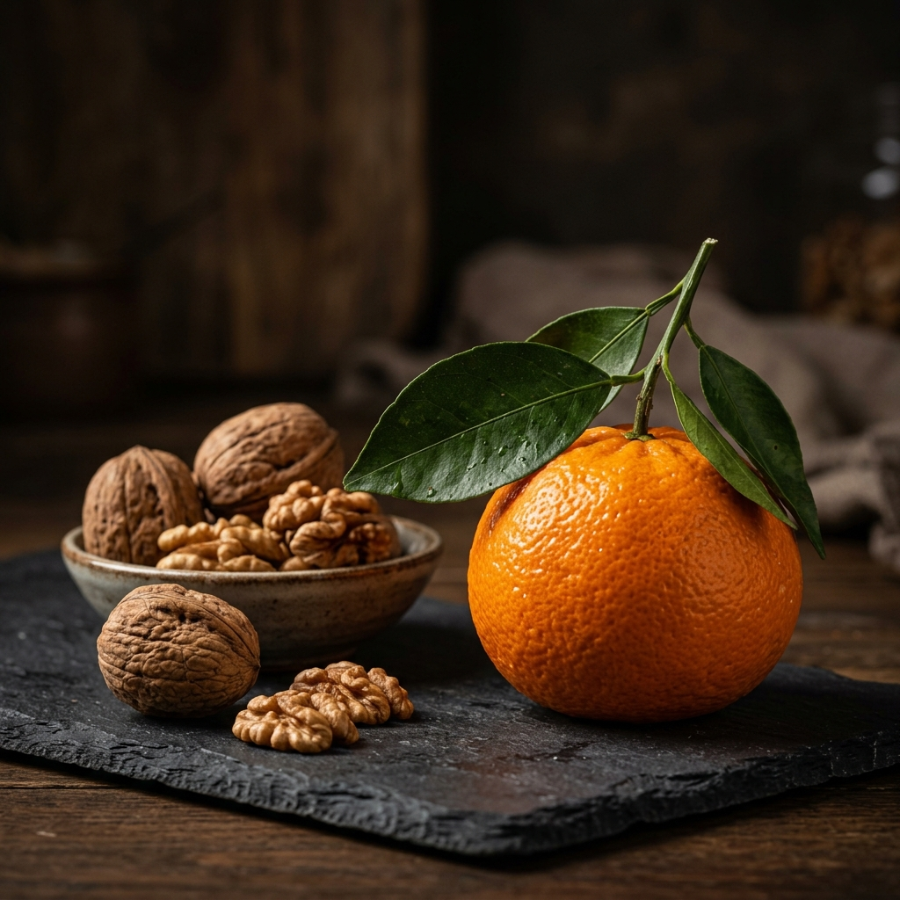
BUILT · Intelligent Fueling
PORTOCALĂ ȘI CAJU
Z7 · GUSTARE
PORTOCALĂ
ȘI CAJU
Intelligent FuelingGustare⏱ 1 min
Calorii200
Proteine15G
Carbohidrați20G
Grăsimi10G
Ingrediente
Portocală1 buc mare
Iaurt grecesc 2%100 g
Caju5 g
Execuție
01Feliază portocala peste iaurt.
PONTCombinația de Vitamina C și proteină fină.
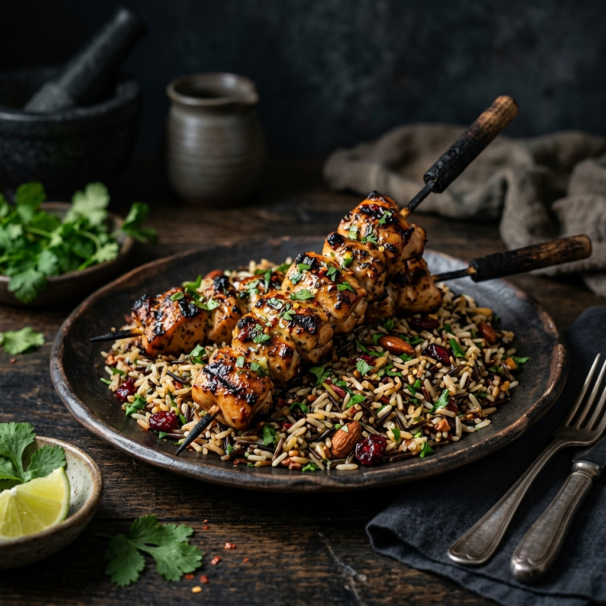
BUILT · Intelligent Fueling
SOMON LA CUPTOR
Z7 · PRÂNZ
SOMON
LA CUPTOR
Intelligent FuelingPrânz⏱ 25 min
Calorii440
Proteine40G
Carbohidrați35G
Grăsimi15G
Ingrediente
File somon130 g
Sparanghel150 g
Cartof natur100 g
Ulei măsline5 g
Execuție
01Pune somonul și sparanghelul în tavă (stropite cu ulei).
02Lăsă la cuptor 15-20 min.
03Fierbe un cartof mic lângă.
PONTSomonul este mai gras, așa că ajustăm grăsimea adăugată din alte părți.
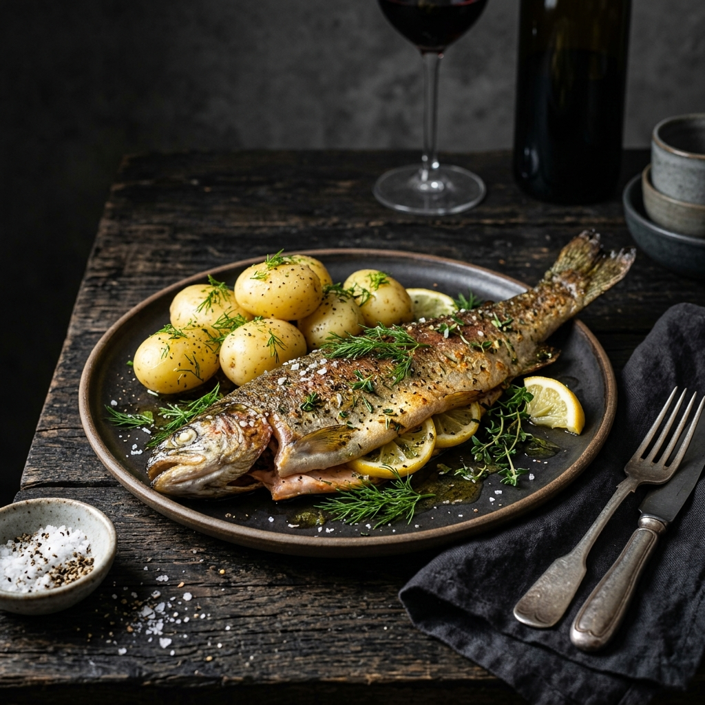
BUILT · Intelligent Fueling
SALATĂ CAESAR
Z7 · CINĂ
SALATĂ CAESAR
Intelligent FuelingSeara⏱ 15 min
Calorii440
Proteine35G
Carbohidrați25G
Grăsimi15G
Ingrediente
Piept pui la grătar120 g
Iaurt grecesc (în loc de sos)40 g
Crutoane integrale25 g
Ciocolată 85%10 g
Execuție
01Amestecă salata iceberg cu dressing din iaurt, usturoi, lămâie.
02Pune puiul și crutoanele.
03Desert: 10g ciocolată neagră.
PONTDressing-ul din iaurt scade caloriile cu 80% față de cel cu maioneză.